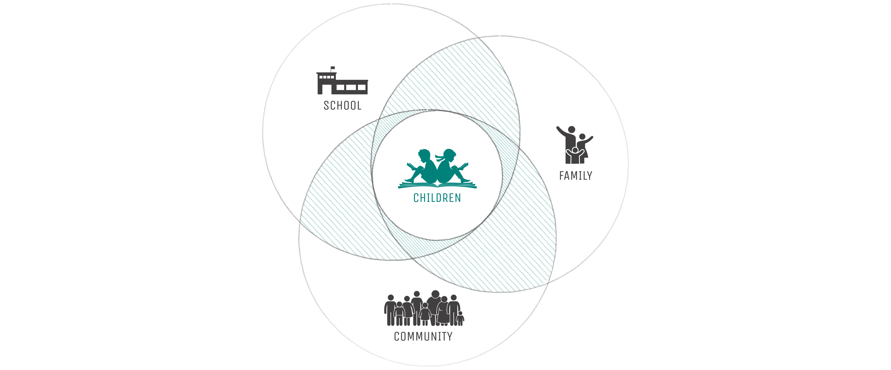

Bāl Shiksha Foundation works to support children from disadvantaged backgrounds so they are not left behind in their education. We believe that a child’s learning and wellbeing do not exist in isolation. Every child stands at the intersection of family, school, and community. When any one of these is fragile, a child’s education is at risk. Our work places children at the centre, while engaging with the families, schools, and communities that shape their everyday lives. By strengthening these interconnected systems, we aim to create conditions where children can learn with dignity, continuity, and hope.

Our purpose
Our purpose is to support underprivileged children in India throughout their educational journey by addressing the financial, social, and systemic barriers that limit access to quality education. Through long-term, holistic support and close engagement with families, schools, and communities, we aim to help children continue learning, grow in confidence, and realise their full potential.
When you learn, teach. When you get, give.
Maya Angelou
Our values
Empathy
We approach our work with care, humility, and attentiveness. We listen first, recognising that every child and family carries a unique story shaped by circumstance.
Dignity
We believe children and families deserve respect, not charity. Our work seeks to support without judgment and to preserve dignity at every stage.
Integrity
Responsibility, Transparency and Accountability for the children we support, the communities we work with, and those who place their trust in us.
Opportunity
We believe education should be a basic right, not a privilege. Our work focuses on creating real opportunities for children to learn, continue, and thrive.
Our ways of working
Bal Shiksha Foundation is built as a collaborative partnership rather than a rigid hierarchy. While members contribute in different ways, responsibilities often overlap, with conversations, decisions, and activities shared collectively.